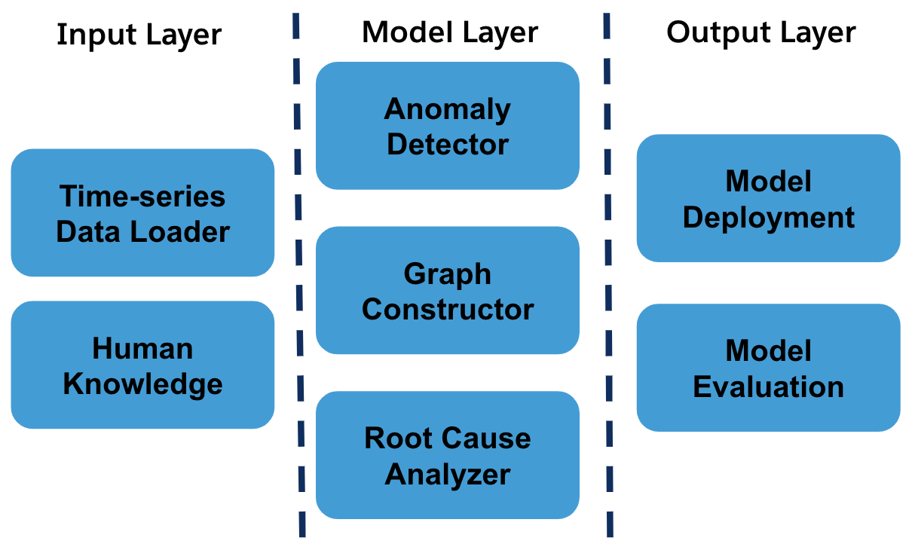

Welcome to PyRCA’s documentation!
Introduction
With the rapidly growing adoption of microservices architectures, multi-service applications become the standard paradigm in real-world IT applications. A multi-service application usually contains hundreds of interacting services, making it harder to detect service failures and identify the root causes. Root cause analysis (RCA) methods usually leverage the KPI metrics, traces or logs monitored on those services to determine the root causes when a system failure is detected, helping engineers and SREs in the troubleshooting process.
PyRCA is a Python machine-learning library designed for root cause analysis, offering multiple state-of-the-art RCA algorithms and an end-to-end pipeline for building RCA solutions. Currently, PyRCA mainly focuses on metric-based RCA including two types of algorithms: 1. Identifying anomalous metrics in parallel with the observed anomaly via metric data analysis, e.g., ε-diagnosis, and 2. Identifying root causes based a topology/causal graph representing the causal relationships between the observed metrics, e.g., Bayesian inference, Random Walk. Besides, PyRCA provides a convenient tool for building causal graphs from the observed time series data and domain knowledge, helping users to develop graph-based solutions quickly. PyRCA also provides a benchmark for evaluating various RCA methods, which is valuable for industry and academic research. We will continue improving this library to make it more comprehensive in the future. In the future, PyRCA will support trace and log based RCA methods as well.
Installation
You can install pyrca from PyPI by calling pip install sfr-pyrca. You may install from source by
cloning the PyRCA repo, navigating to the root directory, and calling
pip install ., or pip install -e . to install in editable mode. You may install additional dependencies:
For plotting & visualization: Calling
pip install sfr-pyrca[plot], orpip install .[plot]from the root directory of the repo.Install all the dependencies: Calling
pip install sfr-pyrca[all], orpip install .[all]from the root directory of the repo.
Getting Started
PyRCA provides a unified interface for training RCA models and finding root causes. To apply a certain RCA method, you only need to specify:
The select RCA method: e.g.,
pyrca.analyzers.bayesian.BayesianNetwork,pyrca.analyzers.epsilon_diagnosis.EpsilonDiagnosis.The RCA configuration: e.g.,
pyrca.analyzers.bayesian.BayesianNetworkConfig,pyrca.analyzers.epsilon_diagnosis.EpsilonDiagnosisConfig.Time series data for initialization or training: e.g., A time series data in a pandas dataframe.
Some detected anomalous KPI metrics: Some RCA methods require the anomalous KPI metrics detected by certain anomaly detector.
Let’s take BayesianNetwork as an example. Suppose that graph_df is a pandas dataframe of
the graph representing causal relationships between metrics (how to construct such causal graph
will be discussed later), and df is a pandas dataframe containing the historical observed time series
data (e.g., the index is the timestamp and each column represents one monitored metric). To train a
BayesianNetwork, you can simply run the following code:
from pyrca.analyzers.bayesian import BayesianNetwork
model = BayesianNetwork(config=BayesianNetwork.config_class(graph=graph_df))
model.train(df)
model.save("model_folder")
After the model is trained, you can use it to find root causes of an incident given a list of anomalous metrics detected by a certain anomaly detector, e.g.,
from pyrca.analyzers.bayesian import BayesianNetwork
model = BayesianNetwork.load("model_folder")
results = model.find_root_causes(["observed_anomalous_metric", ...])
print(results.to_dict())
For other RCA methods, you can write similar code as above for finding root causes. For example, if you want
to try EpsilonDiagnosis, you can initalize EpsilonDiagnosis as follows:
from pyrca.analyzers.epsilon_diagnosis import EpsilonDiagnosis
model = EpsilonDiagnosis(config=EpsilonDiagnosis.config_class(alpha=0.01))
model.train(normal_data)
Here normal_data is the historically observed time series data without anomalies. To find root causes,
you can run:
results = model.find_root_causes(abnormal_data)
print(results.to_dict())
where abnormal_data is the time series data in an incident window.
As mentioned above, some RCA methods such as BayesianNetwork require causal graphs as their inputs. To construct such causal
graphs from the observed time series data, you can utilize our tool by running python -m pyrca.tools.
This command will launch a Dash app for time series data analysis and causal discovery.

The dashboard allows you to try different causal discovery methods, adjust causal discovery parameters, add domain knowledge constraints (e.g., root/leaf nodes, forbidden/required links), and visualize the generated causal graphs. It makes easier for manually revising causal graphs based on domain knowledge. You can download the graph generated by this tool if you satisfy with it. The graph can be used by the RCA methods supported in PyRCA.
Instead of using this dashboard, you can also write code for building such graphs. The package
pyrca.graphs.causal includes several popular causal discovery methods you can use. All of these methods
support domain knowledge constraints. Suppose df is the observed time series data
and you want to apply the PC algorithm for building causal graphs, then the following code will help:
from pyrca.graphs.causal.pc import PC
model = PC(PC.config_class())
graph_df = model.train(df)
If you have some domain knowledge constraints, you may run:
from pyrca.graphs.causal.pc import PC
model = PC(PC.config_class(domain_knowledge_file="file_path"))
graph_df = model.train(df)
The domain knowledge file has a YAML format, e.g.,
causal-graph:
root-nodes: ["A", "B"]
leaf-nodes: ["E", "F"]
forbids:
- ["A", "E"]
requires:
- ["A", "C"]
This domain knowledge file states that:
Metrics A and B must the root nodes,
Metrics E and F must be the leaf nodes,
There is no connection from A to E, and
There is a connection from A to C.
You can write your domain knowledge file based on this template for generating more reliable causal graphs.
Library Design
PyRCA has five key subpackages:
pyrca.graph: This package contains the methods for discovering causal graphs from metric data.pyrca.outliers: This package contains some statistical based anomaly detectors used for detecting anomalous metrics. We will include more methods in this package in the future.pyrca.analyzers: This package contains all the supported RCA methods, e.g., Bayesian inference, Random walk, etc.pyrca.tools: This includes the dashboard tools for analyzing time series and building causal graphs, and the evaluation metric of RCA results.pyrca.simulation: This package contains the methods for simulated data generation.
The following figure demonstrates the main architecture of the library.
{kind=link}
How to Contribute
We welcome the contribution from the open-source community to improve the library!
Before you get started, clone this repo, run pip install pre-commit, and run pre-commit install
from the root directory of the repo. This will ensure all files are formatted correctly and contain
the appropriate license headers whenever you make a commit.
To add a new RCA method into the library, you may follow the steps below:
1. Create a new python script file for this RCA method in the pyrca/analyzers folder.
2. Create the configuration class that inherits from pyrca.base.BaseConfig.
3. Create the method class that inherits from pyrca.analyzers.base.BaseRCA. The constructor for the new
method takes the new configuration instance as its input.
4. Implement the train function that trains or initializes the new method.
5. Implement the find_root_causes function that returns a pyrca.analyzers.base.RCAResults
instance storing root cause analysis results.
To add a new causal discovery method, you may follow the following steps:
1. Create a new python script file for this RCA method in the pyrca/graphs/causal folder.
2. Create the configuration class that inherits from pyrca.graphs.causal.base.CausalModelConfig.
3. Create the method class that inherits from pyrca.graphs.causal.base.CausalModel.
The constructor for the new method takes the new configuration instance as its input.
4. Implement the _train function that returns the discovered casual graph. The input parameters
of _train are the time series dataframe, the lists of forbidden and required links, and other
additional parameters.